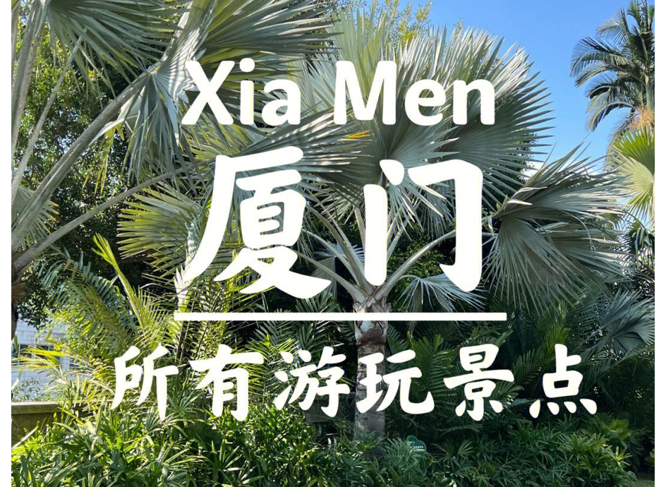

假期如何玩转“厦门”
2023-06-12 来源：旅游网

第一天 —— 鼓浪屿 鼓浪屿是厦门的标志性旅游景点，有着独特的欧洲风情和浓厚的文艺气息。首先可以到码头乘船前往鼓浪屿，在岛上用午餐，可以去文艺餐厅品尝各种极具特色的美食。下午可以租用自行车或滑板车，顶着夕阳在环岛路上漫游，体验一下岛上独特的风光和魅力，到晚上退潮后，可以去鼓浪屿的海边走一走，欣赏美景。晚上回到厦门市区，品尝当地的美食小吃。
第二天 —— 厦门大学、南普陀寺、华侨博物馆和闽南民俗村 第二天可以到厦门大学、南普陀寺、华侨博物馆和闽南民俗村一日游。早上先去厦门大学，在校园内散步，欣赏独特的建筑风格和历史文化。然后再去南普陀寺中餐馆品尝素斋，品味禅意。下午可以到华侨博物馆和闽南民俗村进行参观。晚上可以去厦门的特色夜市逛逛，欣赏厦门市区的夜景。
第三天 —— 集美风景区 第三天安排到集美风景区进行旅游。下午可以到海沧的岩屿公园，观赏美丽的海景和景观，或者去海沧贝壳博物馆参观了解贝壳知识。晚上可以去厦门铁花村夜游，欣赏夜色和特色小吃。
第四天 —— 解脱差旅岛 第四天可以安排前往解脱差旅岛进行旅游，欣赏海岛美景和小巷风光。在岛上很多小巷都很有特色，可以体验一下徒步穿越。同时，解脱差旅岛也是一个特色的渔村，可以去品尝当地美食和海鲜。晚上回到厦门市区，去骑楼美食街道品尝美食，包括沙茶面、福建面线、本地小吃等等。
第五天 —— 海沧金门漂流 第五天可以安排前往海沧金门漂流玩一玩。早上可以在海沧的海边品尝美味海鲜，并预定当日金门漂流的门票。下午来到金门漂流的景区，尽情享受水上漂流的乐趣。晚上可以去骑楼美食街道尝尝厦门的特色小吃。
第六天 —— 南普陀寺、鼓浪屿 第六天可以再次游览南普陀寺和鼓浪屿。早上可以去南普陀寺内的中餐馆品尝素斋，感受禅意和佛教文化。下午去鼓浪屿的西街太远聚落体验，品尝各种小吃和美食。晚上可以顺着厦门市区的海滨路散步，欣赏厦门市区夜景，并品尝当地特色的小吃。
第七天 —— 厦门高崎爱情隧道 第七天可以前往厦门高崎爱情隧道。早上可以沿着厦门环岛路游览，并在路上欣赏当地的美食和风景。下午可以到大观购物中心购买当地特色商品和纪念品，感受厦门的文化氛围。晚上可以到附近的小吃摊上品尝特色美食，也可以前往胡里山炮台欣赏夜景和悠闲的时光。